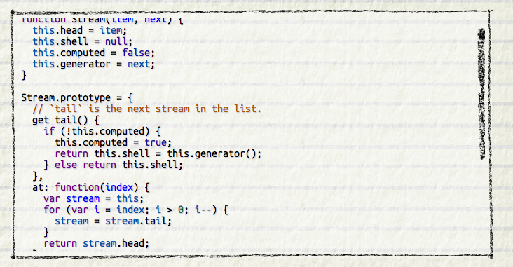
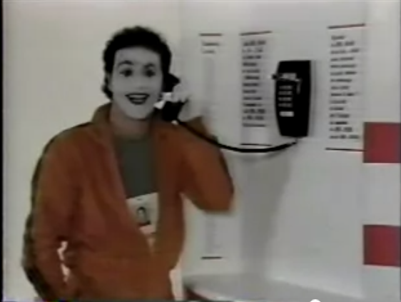

Use [Hypothesis](https://hypothes.is/) for discussion, Q&A, and additional examples or references to improve the material.
User-Centered Design
- Iterative design
- Early focus on users and tasks
- Constant evaluation
The standard approach to designing user interfaces is **user-centered design**, which has three components.
We'll talk about the first two today; we'll defer evaluation (testing with users) until a later reading.
Iterative Design
Iterative Design

Traditional Software Engineering Process: Waterfall Model

Let's contrast the iterative design process against another way. The **waterfall model** was one of the earliest carefully-articulated design processes for software development. It models the design process as a sequence of stages. Each stage results in a concrete product - a requirements document, a design, a set of coded modules - that feeds into the next stage. Each stage also includes its own **validation**: the design is validated against the requirements, the code is validated (unit-tested) against the design, etc.
The biggest improvement of the waterfall model over previous (chaotic) approaches to software development is the discipline it puts on developers to **think first, and code second**. Requirements and designs generally precede the first line of code.
If you've taken a software engineering course, you've experienced this process yourself. The course staff probably handed you a set of requirements for the software you had to build --- e.g., the specification of a chat client or AntiBattleship. (In the real world, identifying these requirements would be part of your job as software developers.) You were then expected to meet certain milestones for each stage of your project, and each milestone had a concrete product: (1) a design document; (2) code modules that implemented certain functionality; (3) an integrated system.
Validation is not always sufficient; sometimes problems are missed until the next stage. Trying to code the design may reveal flaws in the design - e.g., that it can't be implemented in a way that meets the performance requirements. Trying to integrate may reveal bugs in the code that weren't exposed by unit tests. So the waterfall model implicitly needs **feedback between stages**.
The danger arises when a mistake in an early stage - such as a missing requirement - isn't discovered until a very late stage - like acceptance testing. Mistakes like this can force costly rework of the intervening stages. (That box labeled "Code" may look small, but you know from experience that it isn't!)
Waterfall Model Is Bad for UI Design
- User interface design is risky
- So we're likely to get it wrong
- Users are not involved in validation until acceptance testing
- So we won't find out until the end
- UI flaws often cause changes in requirements and design
- So we have to throw away carefully-written and tested code
Although the waterfall model is useful for some kinds of software development, it's very poorly suited to user interface development.
First, UI development is inherently **risky**. UI design is hard for all the reasons we discussed in the first class. (You are not the user; the user is always right, except when the user isn't; users aren't designers either.) We don't (yet) have an easy way to predict how whether a UI design will succeed.
Second, in the usual way that the waterfall model is applied, **users appear in the process in only two places**: requirements analysis and acceptance testing. Hopefully we asked the users what they needed at the beginning (requirements analysis), but then we code happily away and don't check back with the users until we're ready to present them with a finished system. So if we screwed up the design, the waterfall process won't tell us until the end.
Third, when UI problems arise, they often **require dramatic fixes**: new requirements or new design. We saw in Lecture 1 that slapping on patches doesn't fix serious usability problems.
Iterative Design
**Iterative design** offers a way to manage the inherent risk in user interface design. In iterative design, the software is refined by repeated trips around a design cycle: first imagining it (design), then realizing it physically (implementation), then testing it (evaluation).
In other words, we have to admit to ourselves that we aren't going to get it right on the first try, and plan for it.
Using the results of evaluation, we redesign the interface, build new prototypes, and do more evaluation.
Eventually, hopefully, the process produces a sufficiently usable interface.
Sometimes you just iterate until you're satisfied or run out of time and resources, but a more principled approach is to set usability goals for your system. For example, an e-commerce web site might set a goal that users should be able to complete a purchase in less than 30 seconds.
Many of the techniques we'll learn in this course are optimizations for the iterative design process: design guidelines reduce the number of iterations by helping us make better designs; cheap prototypes and discount evaluation techniques reduce the cost of each iteration. But even more important than these techniques is the basic realization that in general, **you won't get it right the first time**. If you learn nothing else about user interfaces from this class, I hope you learn this.
You might object to this, though. At a high level, iterative design just looks like the worst-case waterfall model, where we made it all the way from design to acceptance testing before discovering a design flaw that *forced* us to repeat the process. Is iterative design just saying that we're going to have to repeat the waterfall over and over and over? What's the trick here?
Spiral Model
The **spiral model** offers a way out of the dilemma. We build room for several iterations into our design process, and we do it by making the early iterations as cheap as possible.
The radial dimension of the spiral model corresponds to the cost of the iteration step - or, equivalently, its **fidelity** or **accuracy**. For example, an early implementation might be a paper sketch or mockup. It's low fidelity, only a pale shadow of what it would look and behave like as interactive software. But it's incredibly cheap to make, and we can evaluate it by showing it to users and asking them questions about it.
Early Prototyping
Sketches

Paper Prototypes


Computer Mockups

Here are some examples of early-stage prototyping for graphical user interfaces. We'll talk about these techniques and more in a future Prototyping reading.
Early Prototypes Can Detect Usability Problems

Remember this Hall of Shame candidate from the first class? This dialog's design problems would have been easy to catch if it were only tested as a simple paper sketch, in an early iteration of a spiral design. At that point, changing the design would have cost only another sketch, instead of a day of coding.
Iterative Design of User Interfaces
- Early iterations use cheap prototypes
- **Parallel design** is feasible: build & test multiple prototypes to explore design alternatives
- Later iterations use richer implementations, after UI risk has been mitigated
- More iterations generally mean better UI
- Only mature iterations are seen by the world
Why is the spiral model a good idea? Risk is greatest in the early iterations, when we know the least. So we put our least commitment into the early implementations. Early prototypes are made to be thrown away. If we find ourselves with several design alternatives, we can build multiple prototypes (**parallel design**) and evaluate them, without much expense. The end of this reading will make more arguments for the value of parallel design.
After we have evaluated and redesigned several times, we have (hopefully) learned enough to avoid making a major UI design error. Then we actually implement the UI - which is to say, we build a prototype that we intend to keep. Then we evaluate it again, and refine it further.
The more iterations we can make, the more refinements in the design are possible. We're hill-climbing here, not exploring the design space randomly. We keep the parts of the design that work, and redesign the parts that don't. So we should get a better design if we can do more iterations.
Case Study of User-Centered Design: The Olympic Message System
- Cheap prototypes
- Scenarios
- User guides
- Simulation (Wizard of Oz)
- Prototyping tools (IBM Voice Toolkit)
- Iterative design
- 200 (!) iterations for user guide
- Evaluation at every step
- You are not the user
- Non-English speakers had trouble with alphabetic entry on telephone keypad

The Olympic Message System is a classic demonstration of the effectiveness of user-centered design (Gould et al, "The 1984 Olympic Message System", CACM, v30 n9, Sept 1987). The OMS designers used a variety of cheap prototypes: scenarios (stories envisioning a user interacting with the system), manuals, and simulation (in which the experimenter read the system's prompts aloud, and the user typed responses into a terminal). All of these prototypes could be (and were) shown to users to solicit reactions and feedback.
Iteration was pursued aggressively. The user guide went through 200 iterations!
The OMS also has some interesting cases reinforcing the point that the designers cannot rely entirely on themselves for evaluating usability. Most prompts requested numeric input ("press 1, 2, or 3"), but some prompts needed alphabetic entry ("enter your three-letter country code"). Non-English speakers - particularly from countries with non-Latin languages - found this confusing, because, as one athlete reported in an early field test, "you have to read the keys differently." The designers didn't remove the alphabetic prompts, but they did change the user guide's examples to use only uppercase letters, just like the telephone keys.
A video about OMS [can be found on YouTube](http://youtube.com/watch?v=W6UYpXc4czM&feature=related). Check it out---it includes a mime demonstrating the system.
Prototyping
Prototyping producing cheaper, less accurate renditions of your target interface. Prototyping is essential in the early iterations of a spiral design process, and it's useful in later iterations too.
Why Prototype?
- Get feedback earlier, cheaper
- Experiment with alternatives
- Easier to change or throw away
We build prototypes for several reasons, all of which largely boil down to cost.
First, prototypes are much faster to build than finished implementations, so we can evaluate them sooner and get early feedback about the good and bad points of a design.
Second, if we have a design decision that is hard to resolve, we can build multiple prototypes embodying the different alternatives of the decision.
Third, if we discover problems in the design, a prototype can be changed more easily, for the same reasons it could be built faster. Prototypes are more malleable. Most important, if the design flaws are serious, a prototype can be **thrown away**. It's important not to commit strongly to design ideas in the early stages of design. Unfortunately, writing and debugging a lot of code creates a psychological sense of commitment which is hard to break. You don't want to throw away something you've worked hard on, so you're tempted to keep some of the code around, even if it really should be scrapped. (Alan Cooper, ["The Perils of Prototyping"](http://www.cooper.com/journal/2008/5/the_perils_of_prototyping), 1994. )
Most of the prototyping techniques we'll see in this reading actually force you to throw the prototype away. For example, a paper mockup won't form any part of a finished software implementation. This is a good mindset to have in early iterations, since it maximizes your creative freedom.
Prototype Fidelity
- Low fidelity: omits details
- High fidelity: more like finished product
An essential property of a prototyping technique is its **fidelity**, which is simply how similar it is to the finished interface. Low-fidelity prototypes omit details, use cheaper materials, or use different interaction techniques. High-fidelity prototypes are very similar to the finished product.
Fidelity is Multidimensional
- Breadth: % of features covered
- Only enough features for certain tasks
- Depth: degree of functionality
- Limited choices, canned responses, no error handling

Fidelity is not just one-dimensional, however. Prototypes can be low- or high-fidelity in various different ways (Carolyn Snyder, Paper Prototyping, 2003).
**Breadth** refers to the fraction of the feature set represented by the prototype. A prototype that is low-fidelity in breadth might be missing many features, having only enough to accomplish certain specific tasks. A word processor prototype might omit printing and spell-checking, for example.
**Depth** refers to how deeply each feature is actually implemented. Is there a backend behind the prototype that's actually implementing the feature? Low-fidelity in depth may mean limited choices (e.g., you can't print double-sided), canned responses (always prints the same text, not what you actually typed), or lack of robustness and error handling (crashes if the printer is offline).
A diagrammatic way to visualize breadth and depth is shown (following Nielsen, *Usability Engineering*, p. 94). A **horizontal prototype** is all breadth, and little depth; it's basically a frontend with no backend. A **vertical prototype** is the converse: one area of the interface is implemented deeply. The question of whether to build a horizontal or vertical prototype depends on what risks you're trying to mitigate. In user interface design, horizontal prototypes are more common, since they address usability risk. But if some aspect of the application is a risky implementation - you're not sure if it can be implemented to meet the requirements - then you may want to build a vertical prototype to test that.
A special case lies at the intersection of a horizontal and a vertical prototype. A **scenario** shows how the frontend would look for a single concrete task.
More Dimensions of Fidelity
- Look: appearance, graphic design
- Feel: input method
- Pointing & writing feels very different from mouse & keyboard
Two more crucial dimensions of a prototype's fidelity are, loosely, its look and its feel. **Look** is the appearance of the prototype. A hand-sketched prototype is low-fidelity in look, compared to a prototype that uses the same widget set as the finished implementation. **Feel** refers to the physical methods by which the user interacts with the prototype. A user interacts with a paper mockup by pointing at things to represent mouse clicks, and writing on the paper to represent keyboard input. This is a low-fidelity feel for a desktop application (but it may not be far off for a tablet PC application).
Comparing Fidelity of Look & Feel
Here's the same dialog box in both low-fi and high-fi versions. How do they differ in the kinds of things you can test and get feedback about?